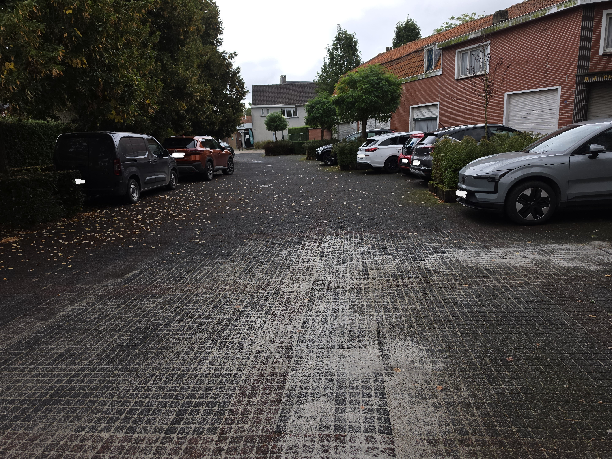
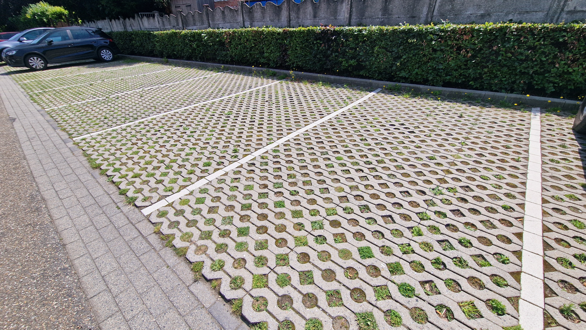
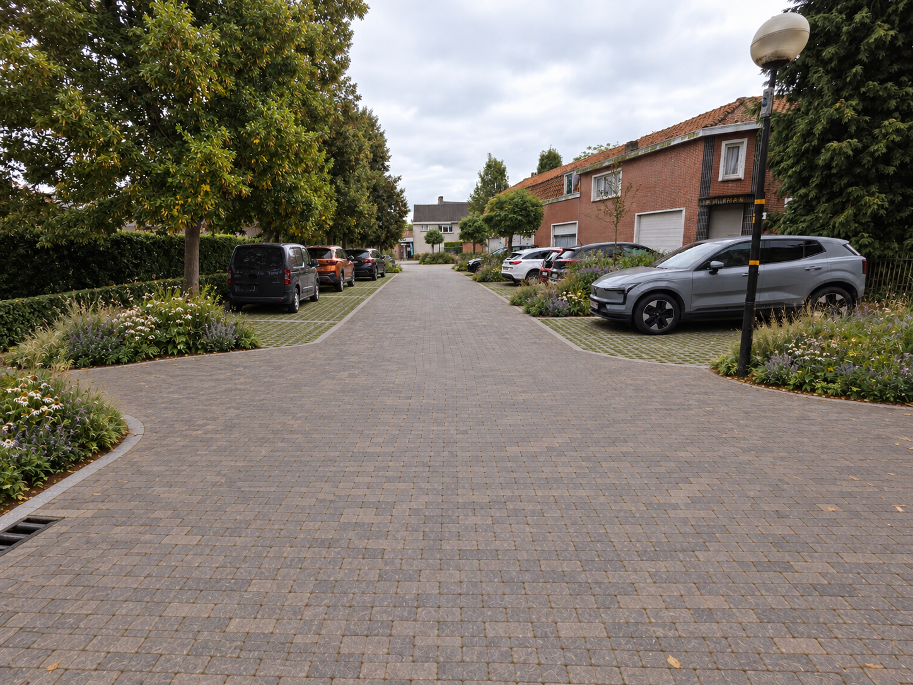

Overzichtelijk parkeren
Duidelijk afgebakende vakken en voldoende manoeuvreerruimte benutten de beschikbare plek beter. Een veilige voetgangersroute en bereikbaarheid voor de brandweer blijven uitgangspunten.
DEELGEBIED 04 · BERGSTRAAT
Aan de noordoostkant maken we van de bestaande parkeerzone een duidelijk en groener aankomstgebied. Beter organiseren gaat samen met ruimte voor bomen en regenwater.
Idee van een vrijwilliger · geen beslist planIk verzamel ideeën en reacties van buurtbewoners. Ik neem zelf geen eindbeslissingen over de inrichting, het budget of de uitvoering. Die liggen bij de bevoegde instanties en eigenaars.

HET VOORSTEL
Duidelijk afgebakende vakken en voldoende manoeuvreerruimte benutten de beschikbare plek beter. Een veilige voetgangersroute en bereikbaarheid voor de brandweer blijven uitgangspunten.
Waterpasserende parkeerbestrating vervangt waar mogelijk gesloten verharding. De rijloper krijgt een draagkrachtige, duurzame afwerking.
Lage plantvakken en infiltratiezones komen op plaatsen waar auto’s er niet over rijden. Bestaande bomen blijven behouden; extra schaduwbomen komen alleen waar voldoende ruimte is.

VOOR DE BUURT
Eigendom, openbaar gebruik, brandweerroute en parkeerbehoefte moeten eerst bevestigd worden. Er wordt daarom nog geen definitief aantal plaatsen beloofd.
HUIDIGE SITUATIE & VOORSTEL
Vergelijk de bestaande omgeving met de voorgestelde inrichting. De visualisaties zijn indicatief en tonen geen goedgekeurd uitvoeringsplan. Selecteer een beeld om het volledig te bekijken.
